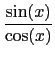

suivant: Réecriture d'une expression avec
monter: Les expressions trigonométriques
précédent: Simplifier en privilégiant les
Table des matières
Index
Simplifier en privilégiant les tangentes : trigtan
trigtan a comme argument une expression trigonométrique.
trigtan simplifie cette expression à l'aide des formules :
sin(x)2 + cos(x)2 = 1,
tan(x) =  et en privilégiant les tangentes.
On tape :
trigtan(sin(x)^4+cos(x)^2+1)
On obtient :
((tan(x))^2/(1+(tan(x))^2))^2+1/(1+(tan(x)^2)+1
et après simplification avec normal on a :
(2*tan(x)^4+3*tan(x)^2+2)/(tan(x)^4+2*tan(x))^2+1)
Documentation de giac écrite par Renée De Graeve